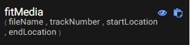
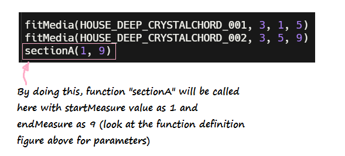

Let's make some music
An introductory guide on how to make music using EarSketch & Python.

Nuevo has new headphones! Can you find yours?
You got contacted to make Nuvi’s next hit mixtape, but when you get to the studio, Nuvi says their next project is going to be produced all in code. This is something that hasn’t been done before, are you up to the challenge? Look around yourself to find your headphones and get ready to join him!
Before we start, we should check if your headphones are working. Try playing the following audio. What do you hear?
Basics first. A few things about music.

What is Music?
Music is the chronological organisation of sounds; that is, making certain sounds at certain times, which make melodic, rhythmic and harmonic sense. The first, most basic concept, is keeping the sounds "in time". This leads us to some of the first few musical concepts: beat, rhythm, duration & tempo.
- Beat is the regular pulse which provides a `timeline` for the rhythm to anchor itself to.
- Rhythm is essentially repeated patterns of long or short, stressed or unstressed sounds or silences which fit into the main beat.
- Duration is the length of notes or sounds or silences which facilitate the rhythm.
- Tempo is the speed at which a piece of music is played.
Python basics
To code music, we need to learn a little Python. Don't worry, it won't bite you 😊. We will learn Python concepts throughout the class, but let's start with a simple print statement.
If you want to jump to a specific Python section, click on the topic below:
Print & Comments
Comments are the parts of the code that do not get evaluated. In Python, they are preceded by the # symbol. Anything after the # symbol is part of the comment and is ignored by your comments. Comments are put in the code to tell the readers what the code is doing. They can make maintenace of code easy and can also help in finding bugs.
Print statements are used to print something on the console. Use print("Hello World") to print "Hello World" in the output screen. We will later learn that print is a function
and we use it to perform a print job. Whatever you pass to the print function is printed on the screen.
Try it yourself! Write comment(s) below and add a print statement that prints "Hello World"! Don't forget to surround Hello World with quotation marks!
# This will get executed each time the exercise gets initialized
# This is a comment. Everything here will be ignored.
# Coders use this part to explain/maintain the code.
print("Hello World")
test_function("print")
success_msg("Great work! Continue to the next section.")
#) and write anything after it to create a comment. Then use print function to print Hello World: Use print("Hello World").Getting started with EarSketch
- Open your favorite internet browser (Edge, Firefox, Google Chrome, Internet Explorer) and go to EarSketch.
- Click on
 icon on the left menu bar and select "Create a new script". When prompted to enter the script name, enter "myjam" and click on "Create" button.
icon on the left menu bar and select "Create a new script". When prompted to enter the script name, enter "myjam" and click on "Create" button.

- Do not delete any of the pre-existing code! We will insert our code in between them.
Activity 1 - Set tempo & Add sounds
- Let's take a closer look at the pre-existing code and understand what it means.

We will be placing our new code between thesetTempo()andfinish()functions. ThesetTempo()function allows you to set the overall project tempo.
Quick fact: Tempo is the speed at which a piece of music is played. Changing a project's tempo allows for different styles of music to be created. Try changing the tempo of yoursetTempofunction and see what happens! Please make sure it is a number between 45-220.
- Now that our tempo is set, it is time to add sounds. To do so, we must utilize the
fitMedia()function. - Make sure the cursor in your program is between
setTempo()andfinish()functions.

- Navigate to
 icon on the left side menu. Scroll through the list to the
icon on the left side menu. Scroll through the list to the fitMedia()function.

- Click on
 icon on the right corner of
icon on the right corner of fitMedia()to insert the function between the 'setTempo' and 'finish' functions. - You may notice that when you paste the function, the following text appears as placeholders for parameters.

You can specify your own values for the following:fileName- Navigate to the 'Sounds' pane and find a sound you like.trackNumber- Select any positive integer as the track number.startLocation/endLocation- These parameters are quantified in measures. A measure is a segment of time which correlates to a specific number of beats.
Cheat sheet:
If you are not sure what values to choose, try this:
fitMedia(YG_TRAP_ELECTRIC_PIANO_FILTERED_1, 3, 1, 17)
Your code should now look something like this:
from earsketch import *
init()
setTempo(120)
fitMedia(YG_TRAP_ELECTRIC_PIANO_FILTERED_1, 3, 1, 17)
finish()Be careful: Make sure the capitalization of the method call is correct. Most programming languages, Python included, are case sensitive. This means that adding capital letters can call a different function than expected. For example:fitMedia()is not the same asFitMedia(). - Once you have input your own parameters, press run, then click on play to listen to your audio clip! If you see any red text, you have encountered some errors! Please ask for help.
The
fitMedia()function is the backbone to making music in Earsketch. We will be using this function a lot, so if you have any questions regarding its usage, please ask!
Activity 2 - Make a song
Now that you have learned how to add sounds to Earsketch, let's try and make a song! You should already have one audio clip in Earsketch, but songs are made up of various instruments, so we need to add more audio clips.
- Add another
fitMedia()call. - Find an audio clip you would like to add to your current song and input it under the "fileName" parameter.
- The "trackNumber" parameter should be a unique number. This will allow us to place our sounds on different tracks. Having different sounds on different tracks allows us to maintain organization of our sounds and play different sounds at the same time.
Example: If the first
fitMedia()call is on track 1, the secondfitMedia()call should be on track 2. - Complete the rest of the parameters.
- Repeat these steps until you have four different audio sounds in your song.
Cheat sheet:
Your code should now look something like this:
from earsketch import *
init()
setTempo(120)
fitMedia(RD_TRAP_BELLLEAD_1, 1, 5, 9)
fitMedia(YG_TRAP_STRINGS_2, 2, 1, 17)
fitMedia(YG_TRAP_ELECTRIC_PIANO_FILTERED_1, 3, 1, 17)
fitMedia(YG_TRAP_BASS_9, 4, 1, 9)
finish()
Functions
Functions are a way to organize pieces of similar or repeating code. Rather than having to constantly type out the same code, we can put the desired code in a method and call it whenever we want to use it.
To make a function in python, we must use the def keyword. This keyword tells the code editor where the function is defined. Here's what a function looks like:
 The code that is indented underneath the
The code that is indented underneath the sectionA function is the code that is executed each time the function is called. The variables defined between the parentheses are known as parameters. These parameters help generalize the functions so they can be reused. If no parameters are needed, they can be ignored. To call a function, input the name of the function and its parameters wherever you want to execute the function.
For example, in order to call function sectionA, we would do something like this:


Challenge - Create your own function!
# This will get executed each time the exercise gets initialized
# Create a function called addNumbers
# that takes 2 parameters called number1 & number2
# and prints the sum on console.
# Call the function addNumbers with parameters 3 & 5.
# What is printed on the console?
# Create a function called addNumbers
# that takes 2 parameters called number1 & number2
# and prints the sum on console.
# Call the function addNumbers with parameters 3 & 5.
# What is printed on the console?
def addNumbers(number1, number2):
print(number1+number2)
addNumbers(3,5)
test_function("addNumbers")
success_msg("Great job!")
def) to create a function. Code inside function should be "TAB"d. Call the function with parameters 3 & 5.Activity 3 - Organize your songs using functions
In Earsketch, functions are mostly used to organize different sections of a song. The most common musical form is A-B-A where each section is four measures in length, and the A sections sound different from the B section.Now that we learned how to use functions, let's try to use them to organize our songs better.
- Define your function with a
startMeasureparameter andendMeasureparameter. - Place the sounds you would like to have the function represent underneath your function definition.
- Try to make multiple sections of a song (verse, chorus, intro, etc.) and define them with your functions. If you don't do this, and only use multiple
fitMediacalls, you will notice that your program will become long and hard to understand. To help avoid having a large project file, use functions!Note: The purpose of a function is to help reduce redundant code throughout the program. - The following is an example of how different sections of a song may look in the Digital Audio Workstation (DAW).
Quick Fact: The Digital Audio Workstation is the area which the sounds appear in. It is at the center top of your EarSketch window.

Cheat sheet:
Your code should now look something like this:
from earsketch import *
init()
setTempo(120)
fitMedia(HOUSE_DEEP_CRYSTALCHORD_001, 3, 1, 5)
fitMedia(HOUSE_DEEP_CRYSTALCHORD_002, 3, 5, 9)
# Section A
def sectionA(startMeasure, endMeasure):
fitMedia(RD_UK_HOUSE__AIRYPAD_1, 1, startMeasure, endMeasure)
fitMedia(HOUSE_MAIN_BEAT_002, 4, startMeasure, endMeasure)
fitMedia(HOUSE_ROADS_BASS_001, 5, startMeasure, endMeasure)
# Section B
def sectionB(startMeasure, endMeasure, switchPart):
tempMeasure = startMeasure + (endMeasure-startMeasure)/2
if(not switchPart):
fitMedia(Y37_ORGAN_1, 2, startMeasure, endMeasure)
fitMedia(HOUSE_ROADS_BASS_001, 5, startMeasure, endMeasure)
fitMedia(RD_UK_HOUSE__ARPLEAD_1, 6, startMeasure, tempMeasure)
else:
fitMedia(RD_UK_HOUSE__ARPLEAD_2, 6, tempMeasure, endMeasure)
sectionA(1, 9)
sectionB(9, 17, False)
sectionB(9, 17, True)
finish()
Effects in EarSketch
Effects allows the producer to alter the sound of the audio clip into its own unique sound. Similar to how we used fitMedia() to add new audio clips, we must use the setEffect() function to define specific effects for each audio clip. It is important to note that multiple effects can be placed on the same track. This allows for the producer to combine multiple effects together. Earsketch has many effects built-in. To reference all the effects, visit this link
Before we start adding effects to our song, let's breakdown the pieces of the two setEffect functions:

track: The track number to which the effect is applied to. Note: To apply an effect to the Master track, use 0 as the value for track. The master track is where all the audio is collectively played together. This is an easy way to apply an effect to all the sounds being processed.effectType: The specific effect being usedeffectParameter: The setting for the effect being usedeffectValue: The value applied to the effectParameter
setEffect function is used to apply an effect to a specific track for the entire duration of the song, but what if you only want a specific section of your song to have an effect? Use the setEffect function with more parameters!
effectStartValue: The starting value applied to the parametereffectStartLocation: The measure at which the starting value is seteffectEndValue: The ending value of the parametereffectEndLocation: The measure at which the ending value is set
setEffect allows for us to perform "automation" on a specific piece of our song. Automation is a way to change the value of an effect over time. One use of automation is to make a song fade in or fade out. To do so, we must adjust the GAIN effectParameter volume in the VOLUME effectType over time.
For example, if we define our effectStartValue at -60 db and our effectEndValue at 0 db, it will sound like our song is fading in over time. To adjust the starting point and length of the effect, specify the effectStartLocation and effectEndLocation.
Activity 4 - Add effects to your song
Since we are more familiar with using effects, let's add an effect to our song.- Insert a
setEffectfunction call into your code. - Navigate to Curriculum
 > Reference > "Every Effect Explained in Detail".
> Reference > "Every Effect Explained in Detail". - You may notice that Earsketch has many different variations of effects. For now, we will use the DELAY
effectTypein our song. - Now, pick an
effectParameterassociated with DELAY. Here is an example of theeffectParametersDELAY has to offer:
- We recommend using the DELAY_FEEDBACK
effectParameter. View the details for theeffectParametersin the image above. - For the final parameter, input a valid value. Example: Use -6.0 as your effect value for DELAY_FEEDBACK.
Cheat sheet:
Your code should now look something like this:
from earsketch import *
init()
setTempo(120)
fitMedia(HOUSE_DEEP_CRYSTALCHORD_001, 3, 1, 5)
fitMedia(HOUSE_DEEP_CRYSTALCHORD_002, 3, 5, 9)
# Section A
def sectionA(startMeasure, endMeasure):
fitMedia(RD_UK_HOUSE__AIRYPAD_1, 1, startMeasure, endMeasure)
fitMedia(HOUSE_MAIN_BEAT_002, 4, startMeasure, endMeasure)
fitMedia(HOUSE_ROADS_BASS_001, 5, startMeasure, endMeasure)
# Section B
def sectionB(startMeasure, endMeasure, switchPart):
tempMeasure = startMeasure + (endMeasure-startMeasure)/2
if(not switchPart):
fitMedia(Y37_ORGAN_1, 2, startMeasure, endMeasure)
fitMedia(HOUSE_ROADS_BASS_001, 5, startMeasure, endMeasure)
fitMedia(RD_UK_HOUSE__ARPLEAD_1, 6, startMeasure, tempMeasure)
else:
fitMedia(RD_UK_HOUSE__ARPLEAD_2, 6, tempMeasure, endMeasure)
sectionA(1, 9)
sectionB(9, 17, False)
sectionB(9, 17, True)
setEffect(2, DELAY, DELAY_FEEDBACK, -6.0)
setEffect(2, DELAY, DELAY_TIME, 1200.0)
setEffect(0, VOLUME, GAIN, -60, 1, 0, 3)
finish()
Activity 5 - Fade in
Now that you have one effect in your song, let's try to fade in the introduction of our song.
- Add another
setEffectfunction call into your code, but ensure the following parameters are present:
- Use the "Every Effect Explained in Detail" reference guide to see which parameters VOLUME has.
- To adjust the loudness of an audio clip, use the GAIN
effectParameter. - If we want to make something sound like it is fading in, we must have the sound's volume start at nothing and increase it until around 0 decibels.
Hint: Volume is measured in decibels. In decibels, the more positive a number is, the louder it gets. Also, try not to exceed 0 decibels.
- To do so, we must start the effectParameter at a very low value.
Help, I am stuck!
No worries! See if any of the following helps you, if not, feel free to call one of us, and we will help you.

Identation is very important when you are working in Python. Be careful of spaces & tabs in your code, because "Indentation" errors can sometimes be pretty difficult to spot. However on the positive side, strict formatting makes Python code very clean and organized. Are all your variables, functions indented properly as intructed?
- SyntaxError: invalid syntax
- IndentationError: expected an indented block
- IndentationError: unexpected indent
- NameError: global name '---' is not defined
- Cannot recognize error: spelling mistake?
- TypeError: Can't convert 'int' object to str implicitly

Nuevo Foundation